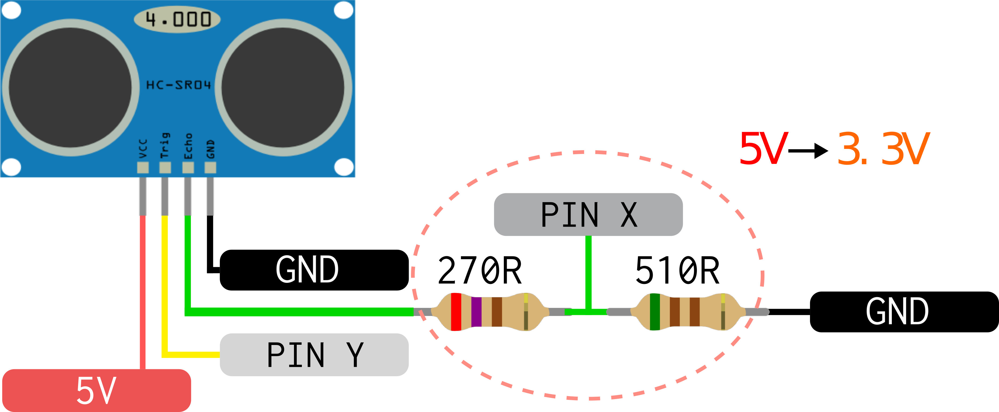

HC SR04¶
Ultrasonic sonar distance sensor with resolution from 2 cm to 400 cm with a max accuracy of 3 mm.
Common uses
- Robotics (object detection, distance calculation)
- Presence detection
References
When request by the trigger pin, the sensor send a ultrasonic train pulse (8 pulses at 40 Khz) over it speaker and waiting to receive the sound on microphone, the sensor than returns the time that the pulse took to travel on the echo pin, knowing the sound velocity (350 m/s) is possible to calculate the object distance:
object distance (m) = time * 350 / 2
note: The sensor returns the total travel time, so it is necessary to divide the distance by 2.
The sensor has the fallowing interfaces/pins:
- VCC: 5V
- GND: Ground
- IN
Trigger: uC sends a 10us pulse to start a new range measurement - OUT Echo: Is a pulse sent by the sensor that has width proportional to the time
Hardware¶
- pin x: Microcontroller Input
- pin y: Microcontroller Output

Warning
This sensor has a 5V interface, on this schematic we do a voltage division to reach 3.3V on the input pin, please check you uC values.
Firmware¶
You must configure:
- The pin that is connected to the
Triggeras digital output (pin y). - the pin that is connected to the
Echoas digital input (pin x)
There are several ways to interface with this sensor, it can be done only by software or by using time peripherals. Using peripherals to count time allows the firmware to perform more actions besides interact with the sensor and increase system resolution, this is a most go if the system wants to read more than one sensor at the same time.
- Configure Trigger and Echo pins respective as output and input
- Configure core delay function
- To start a new measurement generate a 10us pulse on the
Triggerpin - Do a while on the
Echopin waiting it to getHigh - Do a while on the
Echopin waiting it to getlow: - add a nano seccond delay on the while
- count the cycles
- With the count we can calculate the time and then the distance
Pins used on this example:
PC8: TriggerPD20: Echo
// Trigger pin
#define TRIG_PIO PIOC
#define TRIG_PIO_ID ID_PIOC
#define TRIG_IDX 8
#define TRIG_IDX_MASK (1 << TRIG_IDX)
// Echo pin
#define ECHO_PIO PIOD
#define ECHO_PIO_ID ID_PIOD
#define ECHO_IDX 20
#define ECHO_IDX_MASK (1 << ECHO_IDX)
#define SOUND_VEL 350
void hcsr04_init (void) {...};
void hcsr04_trig (void) {
pio_set (TRIG_PIO, TRIG_IDX_MASK);
delay_us(10);
pio_clear (TRIG_PIO, TRIG_IDX_MASK);
}
void main (void) {
// init system
sysclk_init ();
// sensor pins init
hcsr04_init ();
// init delay
delay_init (sysclk_get_cpu_hz ());
while (1) {
// start measurement
hcsr04_trig();
// wait for pulse init
while (pio_get (ECHO_PIN, PIO_INPUT, ECHO_IDX_MASK) == 0) {}
// pulse has started
unit32_t count = 0;
while (pio_get (ECHO_PIN, PIO_INPUT, ECHO_IDX_MASK) == 1) {
delay_us (1);
count++;
}
// delay is microsecond
float time = count * 0.0001;
uint32_t distance = time * SOUND_VEL / 2.0;
// delay for a new mes
delay_ms(10);
}
}
Resolution
Usually vendors software framework wouldn't provide software delay for a period less than nano second.
The resolution of this code is limited to the delay_us(1) used to calculate
the pulse time. This implies in a resolution of 17.5 mm in distance that is higher than the resolution
of sensor (3 mm).
Solutions:
- Use a lower delay (can be done by nasm)
- Use systick to calculate time
 Use timercounter peripheral to count time
Use timercounter peripheral to count time
Timeout
This implementation don't have timeout on the echo signal, some time the sensor won`t generate an echo pulse and that could lead the firmware to be stuck.
Solutions:
- Add a software timeout on both
while - Use systick to timeout
- Use an RTOS that has timeout mechanisms
Example on how to do by software:
+#define TIMEOUT_US 100
// wait for pulse init
+uint8_t timeout = 0;
+uint32_t timeout_count = 0;
while (pio_get (ECHO_PIN, PIO_INPUT, ECHO_IDX_MASK) == 0) {
+ if (timeout_count++ > TIMEOUT_US) {
+ timeout = 1;
+ break;
+ }
+
+ delay_us(1);
}
+if (timeout == 0) {
while (pio_get (ECHO_PIN, PIO_INPUT, ECHO_IDX_MASK) == 1) {
....
+}